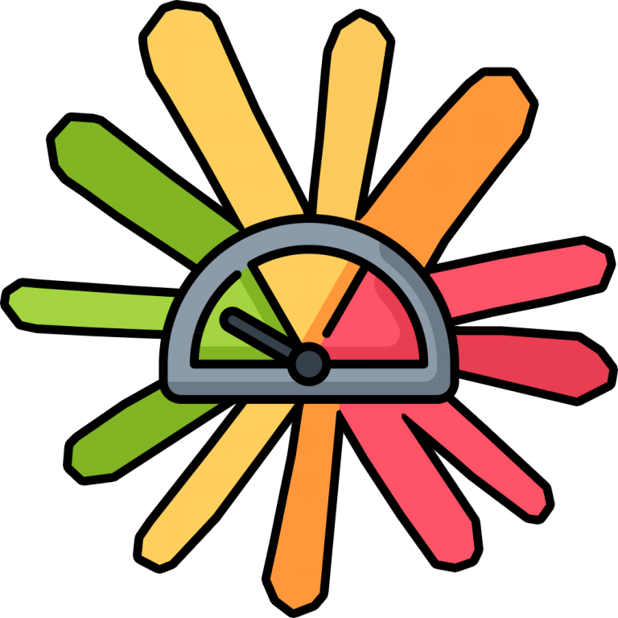
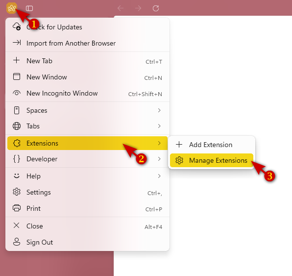
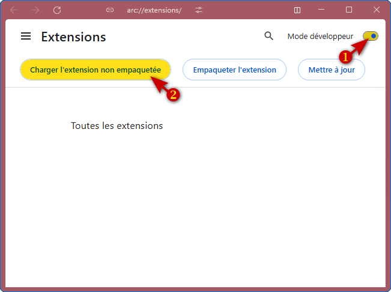
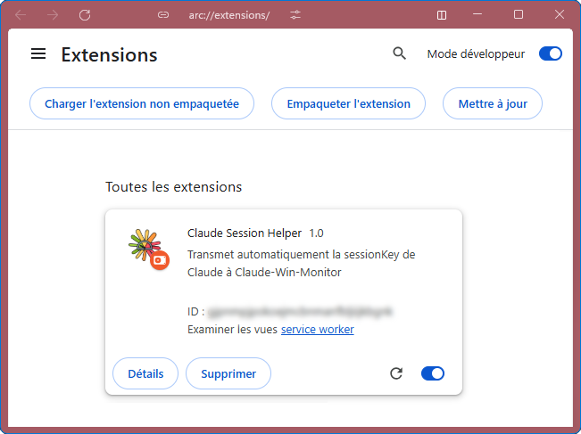

Guide d'installation & mise à jour de la sessionKey
● Extension Chrome / Edge
Claude-Win-Monitor a besoin d'une clé de session (sessionKey)
pour interroger l'API de Claude et afficher vos statistiques d'usage.
Cette clé est un cookie géré automatiquement par votre navigateur. L'extension Claude Session Helper la récupère et la transmet à l'application — sans aucune intervention de votre part.
Dans Chrome ou Edge, cliquez sur le menu ⋮ (trois points)
en haut à droite, puis Extensions → Gérer les extensions.
Ou tapez directement : chrome://extensions

En haut à droite du gestionnaire d'extensions, activez le bouton Mode développeur, puis cliquez sur Charger l'extension non empaquetée.

Naviguez jusqu'au dossier extension/ du projet
Claude-Win-Monitor et sélectionnez-le.
L'extension Claude Session Helper apparaît dans la liste.

La sessionKey change dans deux cas :
chrome://extensionssessionKey (sk-ant-sid02-...)| Événement | Action |
|---|---|
| Démarrage du navigateur | Envoi de la sessionKey |
| Installation / réactivation | Envoi immédiat |
| Chargement d'un onglet claude.ai | Envoi |
| Renouvellement du cookie par Claude | Envoi automatique |
| Démarrage de l'app (détecté en ≤ 10s) | Envoi si app absente au départ |
sessionKey est transmise uniquement en local (localhost:27182)claude_monitor_config.json sur votre machinecookies (lecture claude.ai) + tabs (détection page)| Symptôme | Cause probable | Solution |
|---|---|---|
| App reste vide après lancement | Extension désactivée | Réactiver l'extension |
| Fenêtre Paramètres reste ouverte | Extension pas encore envoyé | Attendre 10s ou désactiver/réactiver |
| Erreur 403 dans l'app | SessionKey expirée | Réactiver l'extension ou méthode manuelle |
| Extension ne trouve pas de cookie | Non connecté sur claude.ai | Se connecter puis réactiver l'extension |